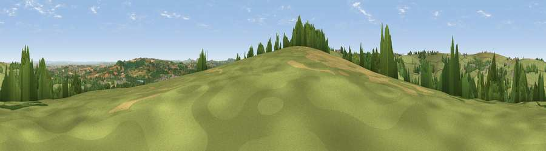

Viewpoint near Wadeford
#18475 in England · top 44% of its area beats it · near WadefordWhere it is
The exact computed spot (ST 31275 09925). Click the marker for map links.
The view, rendered

A 360° render of this exact spot computed from the terrain model, tree cover and land cover — summer colours, afternoon light, calibrated against photographs of famous viewpoints. Real trees, hedges and buildings will differ in detail.
The panorama
Grey silhouette: terrain skyline in each direction (720 bearings, Earth curvature and refraction included). Dashed green: skyline with trees (+15 m) and buildings (+8 m) as obstacles. Blue strip: how far the ground is visible on each bearing.
Where the view opens
Wedge length = distance to the farthest visible ground on that bearing (vegetation-aware). Rings at 10, 25 and 50 km.
What fills the view
72% grassland · 16% woodland · 10% cropland · 2% built-up
Angular shares of the visible panorama (visual magnitude), not map area. Landscape diversity 0.37 (0–1 Shannon).
Key numbers
More beautiful places nearby
The staircase of upgrades: each row has a higher view potential than everything closer. Driving times are estimates from straight-line distance, calibrated against real road routing — check an actual route before setting out.
| Place | Direction | Drive | Score |
|---|---|---|---|
| Viewpoint near Wadeford | SSW · 1 km | ~3 min | 56.5 |
| Viewpoint near Combe St Nicholas | NNW · 2 km | ~5 min | 61.8 |
| Viewpoint near Wadeford | NNE · 2 km | ~5 min | 65.5 |
| Viewpoint near Combe St Nicholas | NW · 3 km | ~7 min | 67.9 |
| Viewpoint near Chaffcombe | ENE · 5 km | ~10 min | 68.8 |
| Viewpoint near Buckland St. Mary | NNW · 6 km | ~14 min | 72.2 |
| Viewpoint near Buckland St. Mary | NNW · 7 km | ~14 min | 77.3 |
| Viewpoint near Hewish | E · 9 km | ~18 min | 78.5 |
50.88471, -2.97834 · source: screening · position refined by local search. Computed location — check access rights before visiting.